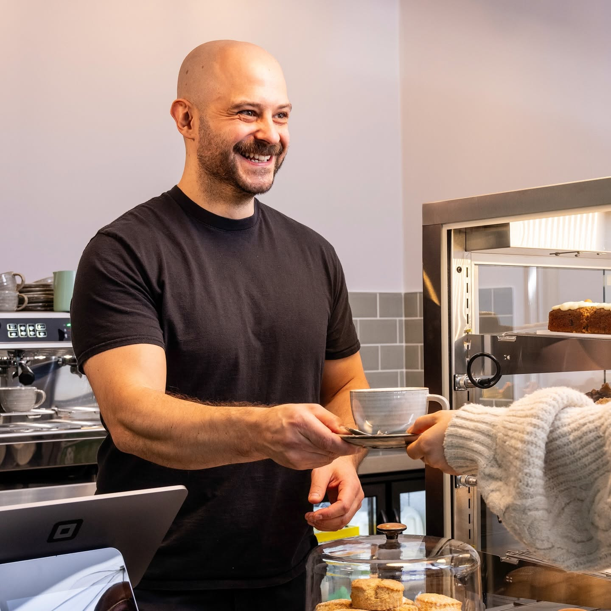
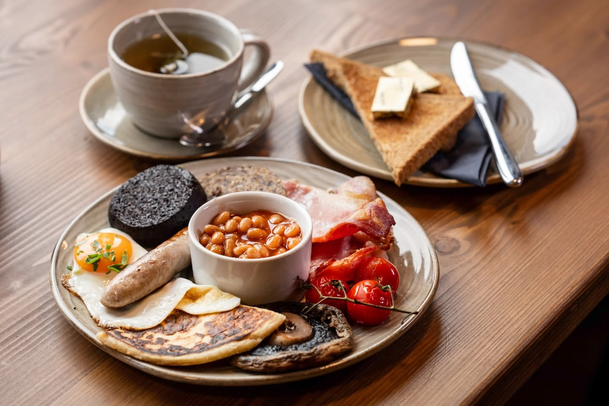
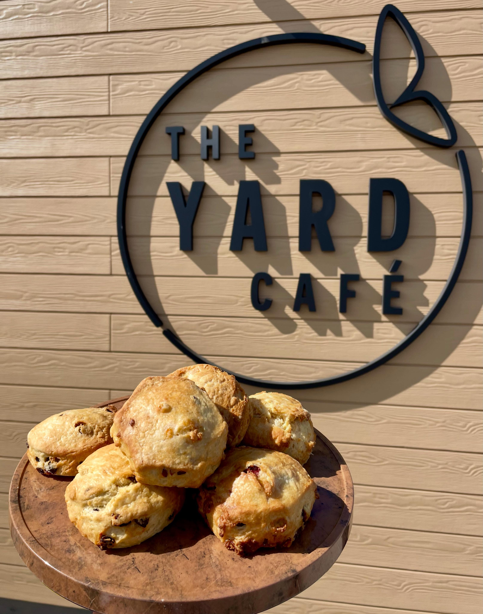
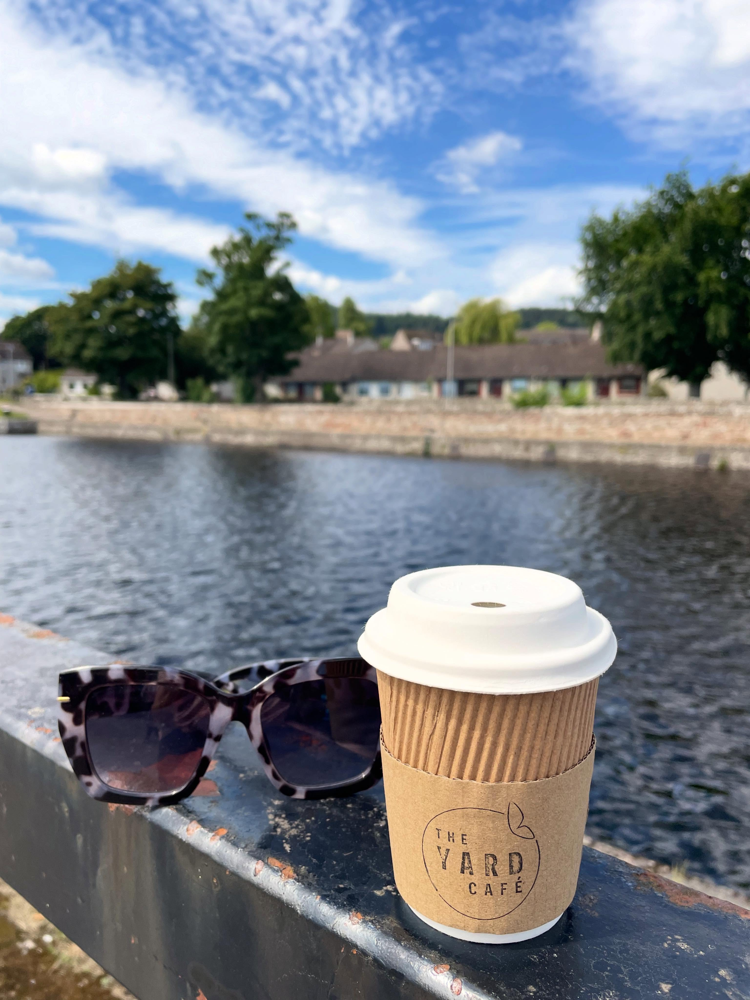
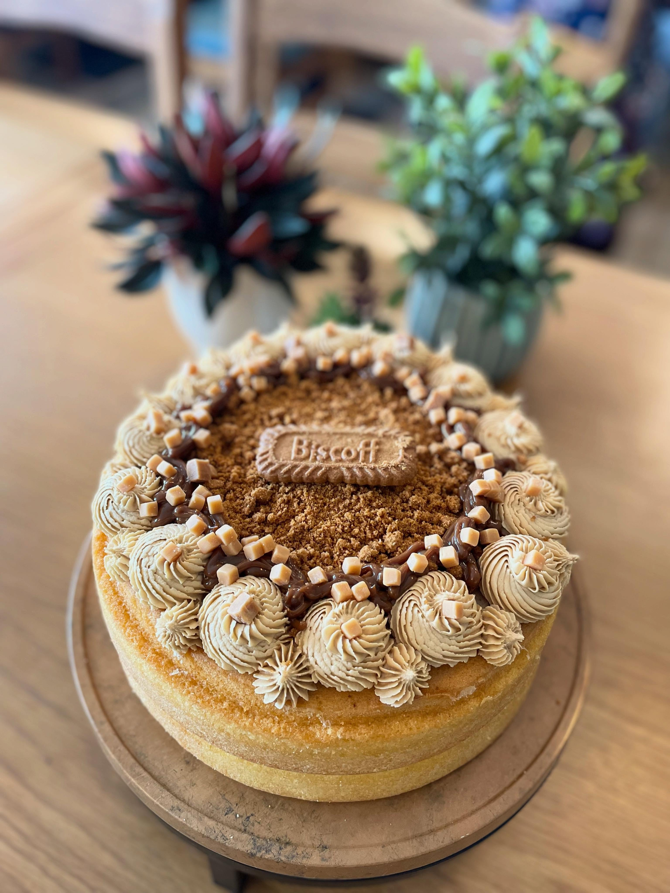
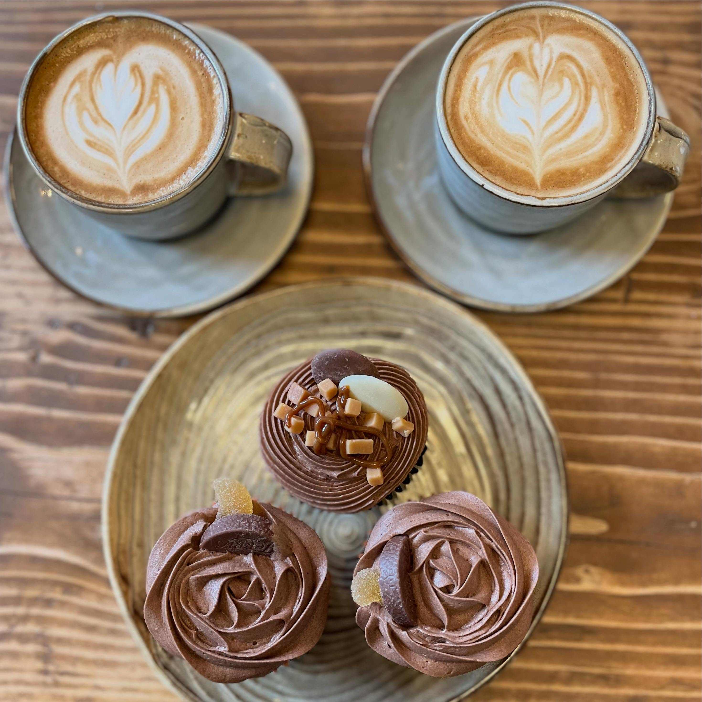
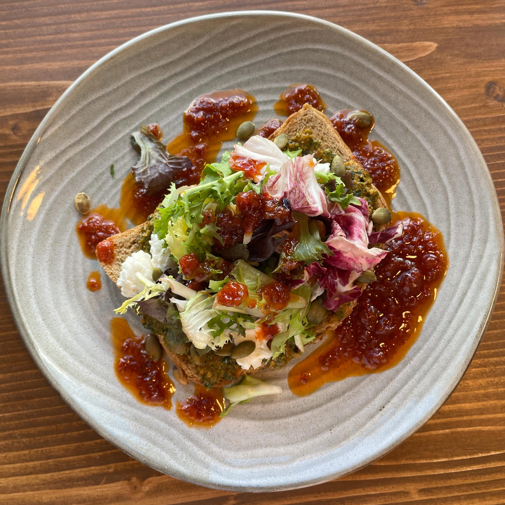
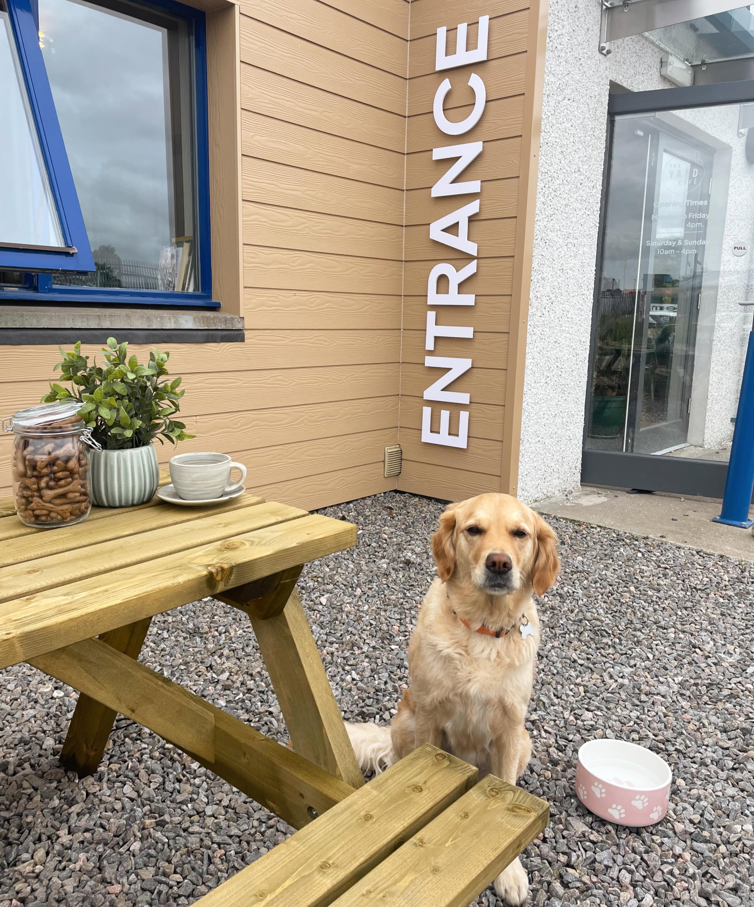
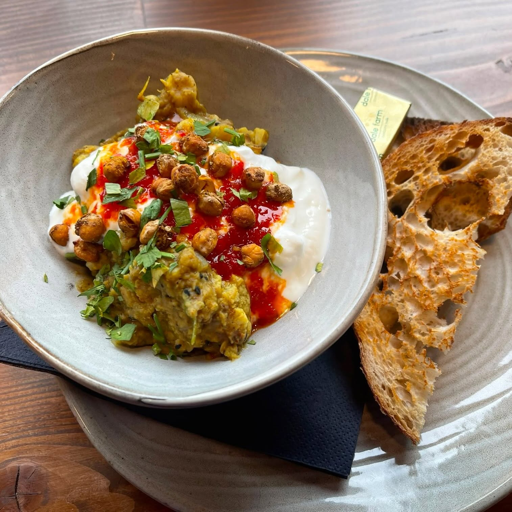

More than a cafe. A fresh start.
The Yard Cafe opened in November 2025 as part of New Start Highland's training village on Carsegate Road. Every Full Scottish breakfast, every bowl of homemade soup, and every speciality coffee you enjoy directly funds hospitality training for people rebuilding their lives in the Highland community.
Warm, unpretentious, and deeply rooted in community. Honest food, proper coffee, and the quiet belief that a cafe can be a force for good.
hospitality skills and confidence



It is not just a cafe. It is a second chance, served on a plate.— New Start Highland


Every purchase changes a life
The Yard Cafe is a living classroom run by New Start Highland — a charity that has been transforming lives across the Highlands for over two decades. People who have faced homelessness, long-term unemployment, or other barriers learn real hospitality skills in a supportive, real-world environment.
Your morning coffee does more than wake you up. It helps someone wake up to a future they can believe in.



Come find us on Carsegate Road
Closed Saturdays & Sundays